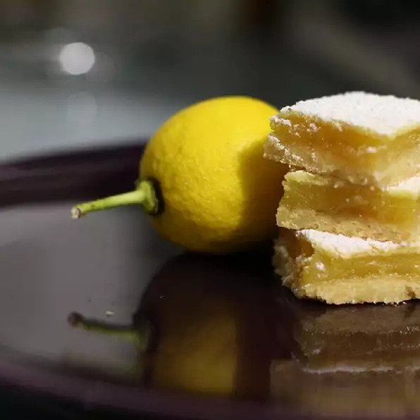

Home
Lemon Bars

Description
Lemon bars on a shortbread base.
Ingredients
1 cup all-purpose flour
¼ cup confectioners' sugar
¼ cup butter
1 cup white sugar
2 tablespoons all-purpose flour
½ teaspoon baking powder
2 eggs
3 tablespoons lemon juice
1 tablespoon lemon zest
⅓ cup confectioners' sugar for decoration
Steps
Preheat oven to 350 degrees F (175 degrees C).
To make Bottom Layer: Mix one cup flour and 1/4 cup confectioners sugar. Melt the butter and stir into flour mixture.
Press flat and even into an 8x8 inch baking dish. Bake for 20 minutes.
While baking, make the top layer: Mix 1 cup sugar, 2 tablespoons flour, and the baking powder.
Beat eggs and add to mixture, stirring well. Add lemon juice and rind, mix again.
Pour over bottom layer; Bake at 350 for 25 minutes. Cool a little, cut into squares while warm; dust with confectioners sugar.